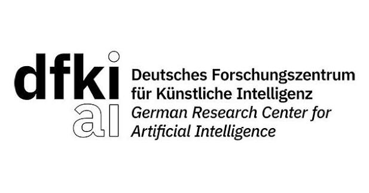

I study how visual systems can remain reliable under domain shift, degraded data, occlusion, and limited supervision. My work connects computer vision research with deployment in intelligent vehicles, railway safety, and financial AI.我关注视觉系统在域偏移、数据退化、遮挡和有限监督条件下的可靠性，将计算机视觉研究与智能汽车、铁路安全和金融人工智能领域的实际部署相结合。ドメインシフト、データの劣化、遮蔽、限られた教師情報のもとでも信頼性を維持できる視覚システムを研究しています。コンピュータビジョンの研究と、インテリジェント車両、鉄道安全、金融 AI における実用化を結びつけています。
My experience spans face analysis, object detection, semantic segmentation, synthetic data generation, and RGB/IR perception. I translate real-world failure modes into research questions, datasets, and evaluation protocols.研究与工程经验涵盖人脸分析、目标检测、语义分割、合成数据生成和 RGB/IR 感知。我从真实场景中的失效问题出发，构建研究课题、数据集与评测体系。顔解析、物体検出、セマンティックセグメンテーション、合成データ生成、RGB/IR センシングに取り組んできました。実環境で生じる失敗事例を出発点として、研究課題、データセット、評価手法を構築しています。
Intelligent vehicles智能汽车インテリジェント車両Railway safety铁路安全鉄道安全Financial AI金融人工智能金融 AI
01
Research interests研究方向研究分野
RECOGNITION视觉识别視覚認識
Reliable visual perception可靠视觉感知信頼できる視覚認識
Robust recognition, domain adaptation and generalization, object detection, semantic segmentation, and multimodal RGB/IR perception.鲁棒视觉识别、域适应与泛化、目标检测、语义分割，以及多模态 RGB/IR 感知。頑健な視覚認識、ドメイン適応と汎化、物体検出、セマンティックセグメンテーション、マルチモーダル RGB/IR センシング。
BIOMETRICS生物识别生体認証
Face analysis in the wild真实场景中的人脸分析実環境における顔解析
Face detection and recognition, image quality assessment, and anti-spoofing under illumination changes, blur, pose variation, and occlusion.光照变化、模糊、姿态变化与遮挡条件下的人脸检测与识别、图像质量评估和活体防伪。照明変化、ぼけ、姿勢変化、遮蔽のもとでの顔検出・認証、画像品質評価、なりすまし検出。
DATA & LEARNING数据与学习データ・学習
Learning with less data数据高效学习データ効率の高い学習
Data-efficient learning, limited supervision, controllable synthetic datasets, and context-aware data augmentation.数据高效学习、有限监督、可控合成数据集，以及上下文感知的数据增强。データ効率の高い学習、限られた教師情報の活用、制御可能な合成データセット、文脈を考慮したデータ拡張。
Open science开放科学オープンサイエンス
SynRailObs
A controllable synthetic dataset for railway obstacle detection, covering diverse obstacles, weather conditions, distances, and railway scenes.面向铁路障碍物检测的可控合成数据集，覆盖多类障碍物、天气条件、距离与铁路场景。鉄道障害物検出のための制御可能な合成データセット。多様な障害物、天候、距離、鉄道シーンを網羅しています。
I collaborate with Dr. Jason Rambach at DFKI on synthetic data, robust visual perception, and face image quality assessment for in-cabin monitoring.我与 DFKI 的 Jason Rambach 博士保持研究合作，方向包括合成数据、鲁棒视觉感知和车舱监测中的人脸图像质量评估。DFKI の Jason Rambach 博士と、合成データ、頑健な視覚認識、車室内モニタリングにおける顔画像品質評価について共同研究を行っています。
DmsFIQA: DMS-Specific Face Image Quality Assessment for In-Cabin Driver Monitoring System
Qiushi Guo, Zhiye Lin, Yuanqing Luo, Jason Rambach
Citation details引用信息書誌情報
Qiushi Guo, Zhiye Lin, Yuanqing Luo, Jason Rambach. DmsFIQA: DMS-Specific Face Image Quality Assessment for In-Cabin Driver Monitoring System. CVPR 2026 Biometrics Workshop. Oral presentation.
022026
FG 2026
Progressive Curriculum Learning and Ghost-Aware Supervision for Real-World Face Detection
Qiushi Guo, Zhiye Lin, Yuanqing Luo
Citation details引用信息書誌情報
Qiushi Guo, Zhiye Lin, Yuanqing Luo. Progressive Curriculum Learning and Ghost-Aware Supervision for Real-World Face Detection. IEEE International Conference on Automatic Face and Gesture Recognition (FG), 2026.
03
VEHITSBest Poster Paper Nomination最佳海报论文提名最優秀ポスター論文賞候補
A Universal Railway Obstacle Detection System Based on Optical-Flow Guided Semi-Supervised Segmentation
Qiushi Guo, B. Cao, D. Hao, C. Wang, L. Chen, P. Yan
Citation details引用信息書誌情報
Qiushi Guo, B. Cao, D. Hao, C. Wang, L. Chen, P. Yan. A Universal Railway Obstacle Detection System Based on Optical-Flow Guided Semi-Supervised Segmentation. VEHITS. Best Poster Paper Nomination.
04
Under review审稿中査読中
SynRailObs: A Synthetic Dataset for Obstacle Detection in Railway Scenarios
Qiushi Guo, Jason Rambach. SynRailObs: A Synthetic Dataset for Obstacle Detection in Railway Scenarios. Under review. Dataset available on GitHub and Kaggle.
05
CVPR Workshop · Exploring the Next Generation of Data
CACP: Context-Aware Copy-Paste to Enrich Image Content for Data Augmentation
Qiushi Guo, S. Wang, C. Chang, J. Rambach
Citation details引用信息書誌情報
Qiushi Guo, S. Wang, C. Chang, J. Rambach. CACP: Context-Aware Copy-Paste to Enrich Image Content for Data Augmentation. CVPR Workshop on Exploring the Next Generation of Data.
062023
IEEE TENSYMP 2023
A Real-Time Chinese Food Auto-Billing System Based on Instance Segmentation
Qiushi Guo, Yifan Chen, Yihang Yao, Tengteng Zhang, Jin Ma
Citation details引用信息書誌情報
Qiushi Guo, Yifan Chen, Yihang Yao, Tengteng Zhang, Jin Ma. A Real-Time Chinese Food Auto-Billing System Based on Instance Segmentation. 2023 IEEE Region 10 Symposium (TENSYMP), pp. 1–5.
072019
IEEE IGARSS 2019
Multi-Scale Machine Learning for the Classification of Building Property Value
P. Helber, B. Bischke, Q. Guo, J. Hees, A. Dengel
Citation details引用信息書誌情報
P. Helber, B. Bischke, Q. Guo, J. Hees, A. Dengel. Multi-Scale Machine Learning for the Classification of Building Property Value. IEEE International Geoscience and Remote Sensing Symposium (IGARSS), 2019.
03
Research & experience研究与工作经历研究・職歴
Sep 2025 — Present2025.09 — 至今2025年9月 — 現在
Senior Algorithm Engineer高级算法工程师シニアアルゴリズムエンジニア
Great Wall Motor Company Limited长城汽车長城汽車
Robust face detection, recognition, and image quality assessment for driver and occupant monitoring; progressive curriculum learning and ghost-aware supervision accepted at FG 2026.研究驾驶员与乘员监测中的鲁棒人脸检测、识别和图像质量评估；渐进式课程学习与鬼影感知监督相关工作获 FG 2026 接收。運転者・乗員モニタリングにおける頑健な顔検出、顔認証、画像品質評価を研究。段階的カリキュラム学習とゴーストを考慮した教師信号に関する研究が FG 2026 に採択されました。
Production model optimization supporting DDAW certification testing and ongoing Euro NCAP-related evaluation.优化量产模型，支持 DDAW 认证测试及持续开展的 Euro NCAP 相关评测。量産モデルを最適化し、DDAW 認証試験および継続中の Euro NCAP 関連評価を支援。
May 2024 — Sep 20252024.05 — 2025.092024年5月 — 2025年9月
Senior Algorithm Engineer高级算法工程师シニアアルゴリズムエンジニア
CSRD
Railway obstacle intrusion detection in adverse weather, at long range, and for small targets; optical-flow-guided semi-supervised track-region segmentation.研究恶劣天气、远距离和小目标条件下的铁路障碍物侵入检测，提出光流引导的半监督轨道区域分割方法。悪天候、遠距離、小物体に対応する鉄道障害物の侵入検出を研究。オプティカルフローを用いた半教師あり線路領域セグメンテーション手法を提案。
Built and released SynRailObs with controllable obstacles, weather, distances, and railway scenes.构建并发布 SynRailObs，可控生成多类障碍物、天气、距离和铁路场景。障害物、天候、距離、鉄道シーンを制御して生成できる SynRailObs を構築・公開。
Mar 2021 — Mar 20242021.03 — 2024.032021年3月 — 2024年3月
Algorithm Engineer · AI Laboratory算法工程师 · 人工智能实验室アルゴリズムエンジニア · AI 研究所
China Merchants Bank招商银行招商銀行
Production face anti-spoofing against replay, print, and cut-out attacks; face occlusion detection and quality control for identity verification.研究并部署针对回放、打印和剪裁攻击的人脸活体防伪模型，以及身份核验中的遮挡检测与质量控制。リプレイ、印刷、切り抜き攻撃に対応する顔のなりすまし検出モデルを研究し、実運用に導入。本人確認における顔の遮蔽検出と品質管理にも従事。
Contributed to a real-time food tray recognition and auto-billing system based on instance segmentation.参与基于实例分割的实时餐盘识别与自动结算系统。インスタンスセグメンテーションに基づくリアルタイムのトレイ内料理認識・自動精算システムの開発に参加。
2019

Research Intern研究实习生研究インターン
German Research Center for Artificial Intelligence · DFKI德国人工智能研究中心 · DFKIドイツ人工知能研究センター · DFKI
Multi-scale machine learning for building property value classification, contributing to a publication at IGARSS 2019.开展用于建筑物业价值分类的多尺度机器学习研究，相关论文发表于 IGARSS 2019。建物の不動産価値分類に向けたマルチスケール機械学習を研究。関連論文が IGARSS 2019 で発表されました。
Data-driven modeling for calibration-free indoor and outdoor magnetic-field positioning.研究基于数据驱动建模的免标定室内外磁场定位。データ駆動モデリングによる、キャリブレーション不要の屋内・屋外磁場測位を研究。
04
Education教育背景学歴
2017 — 2020
M.Sc. in Computer Science计算机科学硕士コンピュータサイエンス修士
Technische Universität Kaiserslautern & DFKI, Germany德国凯泽斯劳滕工业大学与 DFKIカイザースラウテルン工科大学・DFKI（ドイツ）
Specialization in Artificial Intelligence人工智能方向人工知能専攻
Model quantization · English (professional working proficiency) · German (working proficiency) · Chinese (native)模型量化 · 英语（专业工作水平）· 德语（工作水平）· 中文（母语）モデル量子化 · 英語（専門業務レベル）· ドイツ語（業務レベル）· 中国語（母語）
Research & collaboration研究与合作研究・共同研究
Let’s connect.保持联系。お問い合わせ
For research discussions on robust visual perception, synthetic data, and face analysis, reach me by email.欢迎通过邮件交流鲁棒视觉感知、合成数据与人脸分析相关研究。頑健な視覚認識、合成データ、顔解析に関する研究のご相談は、メールでお気軽にご連絡ください。